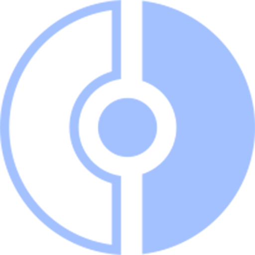

<mat-toolbar class="nav" ><span routerLink="accueil">PokeSite</span>
    
    <div class="spacer"></div>
    <a mat-raised-button class="choice" routerLink="accueil">Accueil</a>
    <a mat-raised-button class="choice" routerLink="pokedex">Pokedex</a>
    <a mat-raised-button class="choice" routerLink="comparaison">Comparaison</a>
    <a mat-raised-button class="choice" routerLink="contact">Nous Contacter</a>
</mat-toolbar>
